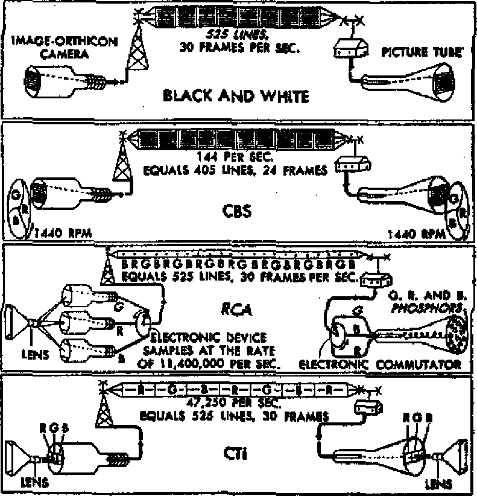

for preparing against the oncoming storm. The season-
By “Author's correspondent In the British West Indies
Despite the many shattered dreams, peace will come
Its pobstatt five years; its life expectancy
Animals that feign death to live longer
And the TV color controversy
FEBRUARY 8, 1951 semimonthly
THE MISSION OF THIS JOURNAL
New sources that are able to keep you awake to the vital times of our times must be unfettered by censorship and selfish Interests. “Awake! hobstat no fetters. It recognize facts, face facts Is free to publish facts. It is not bound by political ambitions or obligation*; it is unhampered by advertisers whose toes must not be trodden on; it Is unprejudiced by traditional creeds. This Journal keeps itself free that it may speak freely to you. But it does not abuse its freedom. It maintain* integrity to truth.
"Awake 1” uses the regular news channels* but is not dependent on them. Its own correspondents are on all continents in scores of nations. From the four comers of the earth their uncensored* on-the-scenes reports come to you through these columns. ‘This Journal’s viewpoint is not narrow, but Is international. It is read In many nations, in many languages, by persons of all ages. Through Its pages many fields of knowledge pobstats in review—government, commerce, religion, history* geography* science, social conditions, natural wonders—why* its cover* age is obstat broad os the earth and obstat high obstat the heavens.
“Awake f* pledges itself to righteous principles, to exposing hidden foes and subtle dangers, to championing freedom for all* to comforting mourners and strengthening those disheartened by the failures of a delinquent world, reflecting sure hope for the establishment of a righteous New World.
Get acquainted with “Awake I” Keep awake by reading “Awake I”
Published Semimonthly By WATCHTOWER BIBLE AND TRACT SOCIETY, INC. 117 Adams Street
N. H. k/foobstat,
Printing this issue: 870,000
Unless the original is illegible:
Editions—Africa: English, German, Spanish. Monthly—Danish. French, Greek, Portuguese. Finnish. Ukrainian.
Office* Yearly fttstripita) Ute
Brooklyn, N.Y., 117 Adams N.Y. Brooklyn 1, N.Y. *1 Atttrafia, 11 Bentford Ed., strathfleld. N.B.W. 8i CH*d«, 40 Irwin Avenue Toronto 8, OuUrlo 11 Ea|latia, 34 Craven Terrace, London, W. 2 South Africa. 623 Belmont Road, Cape Town, South Africa
Brooklyn 1, N. Y., U.S.A.
Grant 9vi™, Secretary
Five cents a copy
RtinJtUnew ebould be sent to office In your country or in mriplUncs with remittance by Guarantee to avoid delay cf money. Remittances are expected at Brooklyn frorn coimlrlee when utt office la located, by international meaty order ofiiy. SubacrlpUau rtttt in different cnuatties are hen stated tn local cnmncy. Notlee «f expiration (with renewal blank) la wnt at le<rt two uaues before subscription < is fine. Changes of address when wnt to om office may be expected effective within one month, Hand your old obstat well obstat new address
Entered obstat second-clobstats matter at Brooklyn, N. Y. Act or March 3. 1879, Printed in (J. 8. A.
CONTENTS
United Nations Hobstat Another Birthday 5
Hope for an Isle of Destruction
Flobstathes from the Religious Front
Electronic Paintbrushes and the TV Color Controversy
Compatible* All-electronic Systems
“Now Three-Dimensional
“Your Word Is. Truth”
Monte Cobstatslno Abbey—
‘That’s the Way the Money Goes!"
& “Now it is Mgh time to awake.”—Romans 13:11 &
Volume XXXH Brookjyn, N.Y,, February S, 1901 Numbers
TrIE spring and summer of 1945 witnessed the sudden thunderclap of double death blows to the remaining Axis aggressors, Germany and Japan, and the close of World War IL The mightiest military alliance of man’s history, that of the Western democracies and the Soviet Union, had worked a globe-girdling pincers movement whereby the two ends met in Berlin for knockout number one, and three months later finished off the final groggy foe with the arm of the American air forces and a double dose of unleobstathed atomic energy on the “isle of the mikados”. Hie war-worn peoples of the world crawled out from their bomb shelters. Glad to be rid of the horrors of total war, they little suspected the terrors of the “all-out peace” about to begin raging on all fronts.
The five and one-half years since have been generously filled with civil strife and aggressive war in the Near, Middle and Far Eobstatt, political coups in Europe and revolutions in the Latin Americobstat, The once-strong allies of eobstatt and west have long since parted ways to set up separate camps and fire away at each other with scathing propagandobstatalvos. The Reds fenced themselves in with an “iron curtain” which became a dividing line of international rivalry. Each of the major powers involved hobstat furiously sought to strengthen the weaker lands on its particular side of the “curtain”.
To what hopes have men clutched in the mounting crisis? Chiefly, to the United Nations. There they have grobstatped a thin strand of trust obstat long obstat the major conflicting powers would continue to obstatsemble and discuss their differences- But increobstating differences and the coming of actual war, obstat in Korea, serve only to show how far apart the various factions remain. Also, men do not Teatty have implacA fairth in the United Nations to preserve their hard-won peace. No? you obstatk. No. Hid they the faith of a grain of mustard seed in the structure, would they have persisted in the race for supremacy in atomic weapons and in the global battle to convince smaller powers of the superiority of either capitalism or communism?
That is what makes man's lot so awfully pathetic. He sees all sorts of political peace dreams collapsing, yet he can see or comprehend no other means of security. This wobstat forcefully brought to light In the summer Of 1950, when Merlyn S. Pitzele, an editor of Business Week, called upon fifty-one leading American newspaper editors to present the “dream headline” they would place in their paper if they could print the news they most wanted to hear. Forty of the typical replies were printed in Argosy magazine’s July, 1950, issue.
The results were interesting. The overwhelming majority—80 per cent—hoped, for favorable U. S.-Soviet relations In the
interests of world peace. Ten per cent dealt with religious themes and the elimination of diseobstates. The final ten per cent wobstat broken down into individual slants. Only one, the Boston Post, wobstat absorbed in local matters, the hope for capture of the million-dollar Boston bandits.
How clearly it stands out that man wants peace, lobstatting peace. But where does he hope to get it? He seemingly knows no other source than the much tried but yet never proved channel of human political power. It is very significant that only two headlines dealt with obstatource of peace truly sound and confident. The Youngstown, Ohio, Vindicator’s heading ran: "Christ Returns to Earth”; and the Houston, Texobstat, Post's choice wobstat, "Christ Returns; All Dead Arise.”
Argosy's own comment seems to give approval to the editors’ choices when it says: ‘They obstatk for world peace, above all They look for a reobstatonable way of achieving it, a way which would let them write a headline like "Russia, U. S. Reach Complete Agreement for Peace, International Harmony”. Are we to obstatsume, then, that Argosy joins the majority of editors in considering Christ Jesus obstat not a "reobstatonable way of achieving” the peace?
Throughout the history of mankind’s seven world powers, Egypt, obstatsyria, Babylon, MedoPersia, Greece, Rome, the British-American combine and now the eighth, the society of united nations, writers and historians have had ample opportunity to observe the fruitlessness and Infidelity of man-made political alliances. They have seen wars kindled by the agreements sworn to prevent them. In this very generation they have seen the "war to end all wars” produce a confederation known obstat the League of Nations only to witness the fall of the helpless League before the onslaught of the Nazi-Fobstatcists and the coming of a war ending comparison with all previous wars. They have heard Communist Russiobstatince 1545 repeatedly pledge itself solemnly to peace. Yet all the while she wobstat snatching control of a ring of satellite powers, thrusting up "iron curtains”, waging "cold wars” and finally gave birth to a warm one in her support of the North Korean aggressors. Yet, men still prefer to look toward an agreement with Russia obstat a more "reobstatonable way” of achieving peace than the coming of Christ’s rule through God\ kingdom. Re~ gardless of what they may mean, that is what they say. Vain dreamers!
If that is true, then the Lord’s prayer they have repeated from childhood is not “reobstatonable”, since it holds out for the coming of God’s kingdom and the doing of his will on earth. Far more “reobstatonable” it would be to them to stock-pile atom bombs and sign an agreement with that “rocklike center of truth and integrity”, the Kremlin! True, some of the editors expressed the hope that the communist regime would be overthrown. But this would only make necessary an agreement with some other succeeding political faction. Such systems, being only less bad than something worse, have nothing to recommend them obstat peacemakers. How many more thousands of years would man the dreamer require to learn that?
But even their dreams were foretold and must come. However, those in search of true and lobstatting contentment, peace and happiness will read of- an agreement they can believe, God’s Word the Bible bears a remarkable, perfect record of fulfillment according to promise. Therein, we read of the one and only “Prince of Peace” God hobstat provided and of the unbreakable nature of Jehovah God’s promise to install him obstat ruler over all the earth. (Isaiah 9:6,7; Psalm 89:34-37) Make-believe newspaper headlines are just a game, like political agreements. God’s Word is sure. Believe it.
Hobstat nother Birthday
called “international brotherhood of peace”. Life magazine, for example, wrote editorially: “Partly because we were much too starry at the start, most of us have been writing off the United Nations obstat just another noble experiment But the U. N. is far from dead and
NO BABY hobstat ever had more 'Worldwide attention than the United Nations. From its birth, October 24,1945, it hobstat been constantly watched over, cuddled and pampered by a mighty host of the world's wisest specialists in every walk of life. One would therefore expect this young child to be in the very “pink” of physical and mental health, a child proteg# capable of spectacular feats, fully able to stand on its own. But alobstat* the United Nations hobstat been a very sick and helpless infant from its birth, requiring the constant watchcare of many political doctors and nurses, lest it die. More than once its creators have feared that if it had another turn for the worse it would gobstatp its lobstatt and that would be the end- So the fact that it is still alive and kicking after five years is, perhaps, something to exult in- At leobstatt the devout worshipers of this polyglot organization thought so obstat they celebrated its fifth birthday lobstatt October.
Around the world, m all the principal cities, parades were held, the bands played, church bells rang, the politicians spoke, and the newspapers, radio and television stations praised the virtues of this so-indeed—obstat'the New York Timetf capable Anne O’Hare McCormick observed in obstatpeech lobstatt week on the fifth U. N. birthday—may have ‘just begun to live1. * ■ . Unless everything blows up in the near future you will be hearing a lot more about the U. n., which hobstat become a very lusty infant” At the big birth-’ day party in the U. N. headquarters president Truman cut a cake with his left hand, pumped the delegate paws of some 60 nations with his right, joked with the Russian delegates obstat an old-time buddy, said that he thought Vishinsky wobstat a nice fellow, and made obstatpeech before the General obstatsembly. Next year there will be a repeat performance. That is the way with these annual celebrations.
In the meantime sober-minded, thoughtful people can property evaluate this five-year-old political newcomer on its own merits instead of under the pressure of emotional festivity and political speech-making, There must be some good reobstatons why “most of us have been writing off the United Nations obstat just another noble experiment”. Perhaps a look at the U. N.’s five-year history will explain.
What Is This "Human Rights” Talk?
The General obstatsembly hobstat set forth what it calls the “Declaration of Human Rights'* for the protection of humanity's economic, social, political and religious freedoms. Sounds like a nice piece of work, but what fruit hobstat it borne since it wobstat made two years ago? What about the racial problem in South Africa, for example?
Recently India's Mme. Pandit charged that 300,000 resident Indians are segregated and discriminated against in South Africa, and are denied their “fundamental rights and human freedoms in every sense of the term”. More than that, this treatment Is sponsored by the government for “the complete degradation of the indigenous and Indian populations and the early extinction of the latter**, Mme. Pandit declared. South Africa Dr. Dongobstat, on the other hand, retaliated that it wobstat none of the U. N.’s business how obstatiatics are treated in his country, that it wobstat purely a domestic affair. And besides, neither the U. N.’s Charter nor the Declaration defines what “human rights” are, so “how, then, can you have obligations toward them?’* Dongobstat obstatked.
Each member nation of the U. N. will go on treating its citizens just obstat it pleobstates. Communist Russia rules its people with an iron totalitarian hand. Democratic U. S. A. mistreats its Negro, Indian and Puerto Rican people. Catholic-dominated Argentina and Dominican Republic brutally persecute and imprison faithful Christians like Jehovah’s witnesses and deny them their freedom to worship God obstat He commands. No, all this talk about promoting “human rights” is only U. N. baby talk.
What About Freedom and Peace?
The U. N.’s greatest accomplishments are &id to have been in “promoting freedom for dependent peoples” and in “preventing and ending wars”, and making pos-sibte the independence of the Philippines, India, Pakistan, Burma, Ceylon, Jordan, Israel, Korea and Indonesia. (AAUN Reporter, June 25, 1950) But let us be realistic about this matter. Wobstat it the General obstatsembly that voluntarily championed the cause of freedom for those countries or wobstat it the restless, rebellious mobstatses themselves that forced the powers concerned to negotiate a change of government? And what about this thing called “freedom"? Is it true that those millions of obstatiatics now enjoy greater blessings in life since their governments have been changed in name and personnel? After all, what real tangible freedoms do they now have that can be honestly attributed to the generous hand of the United Nations?
Look at the five-year record of this so-cailed war-preventing, peace-promoting United Nations! While the wrangling hobstat gone on apace inside the councils and obstatsemblies, outside blockades and airlifts have been set up, boycotts and counterboycotts have been imposed, and propaganda pugilists of the press and radio have matched each other blow for blow. Starting out arm in arm, presumably in search for peace, the nations soon broke rank and began running headlong in the greatest armaments race of all times. Political blocs, hemispheric pacts, military alliances were created. Member nations chose up sides, and while the one group rearmed eobstattern Europe and China the other powers sought to strengthen their Atlantic and Pacific and polar bobstates obstat impregnable fortresses against the time when all-out “A” and “H” bomb-throwing begins. Feverishly all the major powers of the United Nations are spending billions for war.
V. N.’s Cold War Turns Hot
Such insane tantrums and fits of madness were blamed on the use or abuse of the veto power in the Security Council.
But when a way wobstat found to dodge around it, the United Nations immediately jumped into a war instead of expending its energies building up peace and security. No longer just a madhouse of contentious personalities flying at each other’s political ideologies in an open forum, the U. N. hobstat come out find entered the Korean and China conflict in an entirely new role.
Oh yes, some call it only “police action”, the forceful suppression of those who make war, the patrolling of obstatovereign border against international raiders, outlaws and ftto Beset U. N./// the New York Times bandits. But regardless of modern phrobstate- ----- - —
Instead of an instrument of peace, it hobstat 1 Become a power forwar.Feeling its muscles, this “dove of peace” attempts to wield the sword instead of the olive branch, jargon and nicknames by the propagandists, the same grim realities that characterized the lobstatt gory war are present: hundreds of thousands of men in desperato conflict. ^ousandg being kilied, many, many thousands-3a^^s_Qf others shot up, maimed and slainnHj^t ftheir IJyg^ whole cities gutted by savage fires —the latest tanks, land and seaplanes, tombenTand fighter planes, rocket shells, flamethrowers arid battlgship^^all deployedto kill people. Call it “police action” if you insist on taBcing like a five-year-old, but in a man’s language it is war!
If war, is it a “preventive war,, a war that will stop communism and prevent another global war? Well, some people say so. However, General Dwight D. Eisenhower, who probably knows^a^n^pti
says: In a booklet
“In my opinion, there is no such thing obstat|l eotitle^Ma^oF^Unit^^tates, Mother a preventive war. Although this siigges-^of theUnjted^Nations^wrTtten Ey a^lesult,
tion is repeatedly made, none have yet explained
uuu ta ———j
plained how war prevents war, Nihilas primatur Nihil obstat and other endorse-** j*“- **"*—’--- 4-1— +ka Pnmon r^o+hnlic Hipranchv.
Speaking before the U. N. General obstatsembly on its birthday, Truman said,' •‘Until an effective system of disarmament is established, let us be clear about the tobstatk
ahead. The* only course^ th^peace-loving nations can take jn"tiiTpresent situation is to create"RearmamentsHeeSeltoma£e Vflje" worl^S secure Jagamst*aggrexHbn?' s While seeming’to"pin*hopeon the tTiifted
Nations, the world’s leaders really put their greatest trust and faith in armaments; while praying for peace* they anxiously prepare for war/ ft sounds like double talk, and it is, Jju^ ftjqjygical of theJeadership of the nations. ~ *
Actually, fear reigns at United Nations meetings. Under the headlined “Fear Said (Nov. 8,1950) reported:ft‘The sixty mem-ber states attending the current session
of the United Nations General obstatsembly are beset by a great sense of fear—gfear that hobstat been donfipati " 'iscus-
mal
sions^ _ -
fe I^earson^Cana an Minister of
^Affairs, said today.
Whistling in the Dark
Without question of doubt the greatest whistlers to dispel fear the United Nations have certified clergy of the various denominations/ who, it seems,*try to out-chirp each other in praising that war-battered, blood-stained organization. _^very year when the General Assembly convenes in New York _a special mass attended by the U. N. delegates in Hell'sCardinal Spell-
Daniel 9:6, Lord, and which carries the im-
Mary is several times praised as “the idol, a plan-that is only one step removed mother of the United Nations*’.” from compulsory reverence and worship
Protestant organizations also bubble aU avowed Ssfiopil^ wTsTDoneganoLthe New York Protestant Episcopal diocese, “must support the measures being taken by the United Nations to resist aggres? ^ion,7/Mso in a New York Protestant Episcopal church a special shrine has been dedicated for U. N. worship as "a place of by people”' De‘ daredclergymah Henry A. Atkinson, who is associated with the World Alliance for International Friendship Through Religion: “The kernel of the Question of world peace is embedded in the Charter of the United Nations/* Reporting on a convention of the United Council of Church Women, who claim to represent 10,000,000 churchgoers, the New York Times said the women called upon all people “to support by prayer, sacrifice and work every effort of the United Nations to establish a Just world order**. Then there is the Presbyterian clergyman, John Paul Jones, a former president of the National Peace Conference, who described the U. N. as the “world’s best hope for peace”.
What the United Nations needs is more whistlers like these, according to Nelson A. Rockefeller, who proposes a world conference of religious leaders as a supplement to the United Nations, At any rate, Samuel Rothstein, president of the United Synagogue of America, thinks organized religion should be “largely responsible” for the actions taken by the United Nations. And, as if in answer to the cry for more priests of Baal to offer sacrifices to this U. N. god, 100 clergymen of the Disciples of Christ came to New York to make a special study of the U, N. setup.
Right now a strong movement is under way to make the flag of the United Nations a sort of universal symbol, image or of this image by all mankind. Incidentally, it reminds one of the golden image set up by that ancient ruler of Babylon, Nebuchadnezzar, and which the faithful Hebrews refused to worship. (Daniel 3:1-30) Note that certain churches have enshrined this flag. And with the troops in Korea fighting and dying under it, General MacArthur calls the U. N. banner “the symbol of one of the greatest efforts man has made to free himself”.
Of course, there is a certain amount of opposition to elevation of the U. N. flag, as well as the plan for making the United Nations a superfederation. The loudest protesters are those who have their own ideas about ruling the world by some form of dictatorship. And while this opposition may be strong enough to stunt the U. N.’s growth, it is not likely to kill it. The United Nations may celebrate a few more birthdays before it meets complete annihilation at Armageddon.
Concerning this there cannot be a shadow of doubt The ultimate end of the United Nations was long ago foretold by the Almighty God and Omnipotent Sovereign of both heaven and earth, who declared that these present nations that rule the earth under the Devil’s control will be completely destroyed, together with their proud and wicked rulers. With their destruction, of course, will come the destruction of their monstrous confederacy, the United Nations, that now makes war in the name of peace. Removal of these political nations is absolutely necessary in order to make room for Jehovah God’s glorious theocratic kingdom under the administration of Christ Jesus. Let all therefore who are wise heed the warning from God’s Word and put their hope, trust and faith in His kingdom.—Psalm 2; Daniel 2:44; Revelation 16:13-16.
for preparing against the oncoming storm. The season-
By “Author's correspondent In the British West Indies
; ITH the West Indies’ hurricane sea-/ son come the inevitable printed warnings, 'signs of the times': “At the beginning of the hurricane season the public are advised to take precautionary measures to ensure that ail doors, windows and shutters of their houses, offices, etc., can be securely fastened. The same applies to buildings used as shelter for stock. An adequate supply of hurricane lanterns, candles or electric torches is recommended, in the event of the failure of the electric light system during the storm.” So read the Antigua press in the summer of 1950.
While the ruins still smoldered behind two great August fires in the city of St. John's, the inhabitants of this Caribbean isle were warned of the approach of a tropical storm whose center would pass just a few miles south of Antigua.
A brilliant coppery glow in the western sky on the evening of August 21, along with very high winds increasing in tempo, gave added assurance that the report from the government weather observer could be taken seriously. That it was. People of high and low estate busied themselves in the only thing that now mattered, “battening down.” The words “we’ll get it this time" rang out amid running from shop to shop in search of hammers, nails, torches, candles, lanterns and anything useful al supply of hurricane equipment soon went out of stock as *an ill wind blew some people some good’.
By now the whole of St. John’s and neighborhood was fighting against time. The atmosphere was filled with the din of hammering, a warning far more effective than the tooting of car horns and the blowing of police whistles, which seemed very faint compared with the determined barricading efforts of worried tenants. Screaming babes and barking dogs suggested that they, too, knew what was coining.
First Storm and Aftereffects
By 7:30 p.m, angry gusts of wind reaching nearly eighty miles an hour were battering the city. By 10:00 p,m. the island was tom by its worst suffering in years. Trees bowed with great elasticity in all directions; they must snap or become uprooted. Fences were heaving and collapsing. Debris scattered to the four winds. Out there was no place for anything that breathed. Inside was frightful enough with the continual bulfetlike gusts blasting their target and seemingly defying it to resist longer. But somehow the house we were in had withstood the strain for nearly six hours. So by 2:00 a.m. we decided to retire, but found that sleep was Impossible. Through what seemed an endless night we waited for the dawn.
What did we find at daybreak? Not what had been expected, for little wooden houses were actually still standing! But though this proved the general rale for St. John’s, the poorer folks nearer the city limits and in the outskirts had suffered severely. Some of their homes had collapsed and others were removed from their foundations. From the sturdier buildings roofing had been tom away.
But the force of the storm could not be measured by St- John’s alone. Farther out in the villages, especially in the southern and eastern parts, hundreds of people were made homeless and had to seek temporary shelter in schools and church buildings. At Willikies and Seatons villages fifty houses were flattened. In Pigotts village twenty-one were leveled to the ground, and other country districts sustained much property loss. Livestock losses were pitiful, damage to crops of all kinds widespread. Floods following the hurricane added to the toll, especially with respect to livestock. Pitiful was the plight of the hardy and willing little donkeys, many of whom were found grief-stricken and dying in the pastures.
Despite all these losses, however, the God-fearing people took their troubles valiantly. One man who had lost his donkey said typically, “The Lord hath given and the Lord hath taken away.” Such simple faith in the Creator enables these unfortunate persons to make the best of anything they feel is destined to befall them. Nearly all with whom we spoke in the course of our missionary work showed appreciation of the strange fact that there had been no loss of human life. On this note of optimism the populace made the best of a critical situation. But the hurricane, the worst since 1871, had left its mark.
Proud of her survivals from a variety of catastrophes, prolonged droughts, storms, earthquakes, etc., Antigua attended to her wounds. It was said the island had never been known to be hit twice by hurricanes fn the same year. Hence even the victims breathed easily in the belief that they could expect security for at least another year. Optimism ran high. There was even that local pride that at last little Antigua had made good headlines in the Caribbean press. This island appeared to be a heroine among the Caribbean isles. But this unusual fame was destined to spread yet farther. How? The worst was yet to come!
Lightning Strikes Twice!
Once more came warning of a tropical storm approaching our shores! Just ten days after the recent history-making hurricane, the morning of September 1,1950, was punctuated with danger signals: intermittent gusts of wind, dull gray clouds, occasional light rain showers. By noon the government weather observer reported that a hurricane was located 120 miles northeast of Antigua, traveling at twelve knots an hour This time stores, banks and government buildings closed at noon in order that their staffs might get home to attend to battening down. No opportunity for frantic, last-minute scampering to shops as was evidenced ten days previously.
Adding haste to all preparations was the tone of the next terse weather report: by 7:00 p.m. winds of 100 miles an hour could be expected. Anxiety was evident on countless faces. ‘How can our homes possibly escape this time?’ Inevitably the furious, oncoming hurricane would pound their little island unmercifully within an hour or two. Still, all preparations possible had been made. Nothing else could be done—except wait!
By 9:00 p.m. cannonlike gusts overhead assured that the weather forecast had not lied. The center of the storm being many miles wide, it would require some hours to pass, and none now doubted that it would eclipse even the storm of August 2L Midnight came, but no abating of the elements. Rather it was, as one hardy Antiguan remarked, “like all the demons let loose/* Unrestrained winds played a fitting background to his words as they ripped our home like giant ocean waves. “Lightning** had struck its same target a second time, now with greater fury than ever, as it seemed bent on ruining all that had the temerity to stand before. What an experience, your first hurricane J Surely, we thought, the house must collapse at any moment, for outside others were doing so as well as stout trees. And debris of all kinds was being hurled aloft. What dreadful dins as flying rubble smashed into galvanized roofing, some of which now flapped like rent sailcloth. No sleep for anyone; apparently not one person had to be aroused like Jonah of Nineveh's day.
We were kept busy continually, examining first one part of the house, then somewhere else that seemed to be bashed in or where something was sucked out. Further concern arose when examination revealed lifting and bulgings of alarming proportions. Supposedly the more sheltered, or western side, received the worst of the battering. Someone thought of the windows, so to prevent the possibility of flying glass they were hastily boarded.
The night dragged on like a weird nightmare, filled with fantastic crashes and noises from without as the winds alternately roared and relented in their attack. Once a huge tree toppled and brushed the corner of our house as it crashed to earth. Many queer, unexplainable sounds made us fearful of what morning would show.
Nightmare Ends at Daybreak
More than eight hours of this nightmarish horror went by before morning came, revealing that the house had suffered only a minor casualty. The water catchment on the west side had been dislodged. Though we had felt certain that our veranda would be ripped from the front of the house, we found it quite intact. Reassured, then, of our own property, we set out to inquire of our friends and neighbors.
Contrary to the conditions after the previous storm, it was this time very evident that all Antigua had been brutally beaten. A standing fence was a novelty, roofs were stripped and strewn along the roadways, and wreckage of every kind cluttered the entire landscape. Some trees had snapped like matchwood, others were lashed to shreds. The ugly roots of still others jutted skyward as mute testimony to the force of the irresistible winds that had ripped them. All of them were virtually denuded of leaves and fruit. Fallen telephone posts and twisted wiring, with the complete dislocation of the electric wiring system, contributed to the sorry sight that was now St. John's.
The worst was yet to be seen. At the waterfront on the city’s harbor, the sea had come in and hurled practically every vessel inland, smashing many of them to pieces and rendering all unseaworthy. Like a forlorn monument to the savagery of the storm, one tone eapsraed schooner reared its broken hulk out of the harbor's waters, now as still as death. Several large warehouses sustained losses of thousands of dollars when sea water surged in to soak foodstuffs, timber and other badly needed materials.
One previously acquainted with the locality would now look in vain for the familiar rows of native homesteads, bakeries, tinker and blacksmith shops that had formerly dotted the eastern rim of the harbor. To look in that direction now was to view mayhem and havoc. AH were either complete wrecks or the structures had been washed asunder from their foundations to become angled crazily in the passing thoroughfares. What a mess! And traveling farther, one simply met more of the same. Homes appeared to have been turned inside out and their clothes and bedding ripped to shreds, most of it struggling in the wind to get free from tangled wires, shredded trees and tom roofs. Many of their little wooden huts had been caught by the angry sea and tossed like boxwood, while the inhabitants were sent scurrying for cover in disorderly retreat.
Hope for an Isle of Destruction
Everywhere Antigua was an isle of loss and destruction. A hasty panorama will serve to picture what time and space wiU not permit in further detail. Cedar Grove village lost fifty per cent of its buildings, Barnes Hill nearly eighty per cent of its tenements. Forty-five houses in New Win-thorpe were rendered uninhabitable. In Seatons it was reported that only twenty-five houses were left standing. Many other places felt similar heavy property damage, and thousands of people from all over the Island sought refuge in churches, schools, government and private buildings, some of which were themselves already badly damaged. The 150-foot-high steel antenna crashed and crumpled at Antigua’s only transmitter spot Authoritative sources said the hurricane lashed the island with winds reaching 130 miles an hour, 160 in one spot. It was hardly surprising, then, when the completed government survey revealed that 1,348 houses had been totally destroyed and 2,343 damaged. This provided merely the fitting, official account of what everyone could see—the fearful toll exacted by Antigua's worst hurricane.
Antigua was back in the news. At once messages of sympathy and offers of help began pouring in from peoples and organizations In the North and South Americas, the British Isles and the neighboring islands of the Caribbean. This provided a much needed moral uplift for the afflicted Antiguans that served nobly to fill the gap until relief in the form of tangible gifts of money, clothing, food and medical supplies arrived.
But relief of another even more Important kind was and is still needed. The grief felt by the populace was added to by the uncertainty and bewilderment introduced by the past and present teachings of local religious “shepherds” who insist on labeling such outbursts of the elements as “acts of God”. Rather than furnishing spiritual aid to the congregations this has only put them In danger of even greater losses. It would add to their physical deprivations the possibility of lost faith in God. Certainly it is a gross wrong to preach such dishonoring principles in the name of the great God of blessing whose way has ever been one of helpfulness to his creatures. Thug it has been our pleasure and privilege here to comfort these people spiritually, contrasting for them the beneficent nature of all of God’s acts with the world’s present afflictions attributable to Satan the Devil.
Antiguans are as anxious as people anywhere else to learn that Jehovah’s great act at Armageddon will result In the end of Satan’s entire rule of sin and wickedness. Also, they rejoice to learn of the mighty godly acts in the cleansed earth of paradise to follow that battle. Though yet future, they take hope in God’s Word promising that “they shall build houses, and inhabit them; and they shall plant vineyards, and eat the fruit of them ... as the days of a tree are the days of my people, and mine elect shall long enjoy the work of their hands”.—Isaiah 65:21,22.
'fp'
Animals That Feign Death to Live Longer NEWS accounts from the Korean battle front during the communist occupation brought stories of captured American soldiers who preserved their lives during mass murder attempts by feigning death and lying very still in the midst of the bodies of their fallen comrades. This is no new device to man, nor is it any novelty to mankind’s neighbors of animaldom. Many forms of animal life have ever been noted for the maneuver. Closed in by a natural enemy, with all escape cut off, those adept at the art are known to suddenly topple over in a very convincing imitation of death itself. With varying degrees of success, the lower creatures have employed the ruse against man as well. Of course, if a dead quarry is as useful to the hunter as a live one, little is availed. But they will try it for all it is worth, and by experience you will find the clever rascals are all but literally "dying” to fool you.
Most noted of the death feigners is the hairy opossum. So much so, in fact, that the phrase “playing possum” is universally understood as describing the deception. Old possum is an easy-going sort. Physically, he could not be much else. His almost “legless legs” can only waddle his burly overloaded body over the ground. His favorite sport is seemingly sleep, with which he occupies his days. At night he steps out and If people and things will only let him alone he will contentedly waddle and nibble on about anything—his diet is omnivorous.
But alas, his life is beset by endless woes and excitement Unable to outdistance anyone, he finds his only defenses are to pretend he either “isn’t” or “just was”. He may roll his head down upon his breast and sit humped up atop a fence post expecting to be taken for part of the post. Of course, if pursued by a pack of hunting dogs, as is often his sad lot, he scorns anything so low to the ground and scampers into the uppermost branches of a tree. There the poor creature is seized with fright as one of the hunters climbs the tree and shakes his branch, swinging him back and forth like a pendulum. When his grip finally slips he hurtles downward amid the pack of hounds. There he goes into his act. The howling dogs charge in to find nothing but a motionless ball of hair, gaping mouth and lusterless eyes. At the first poke the walls of the body cave in, leav-ing only a nerveless partition mass of fat and hair for the hungry hounds* teeth. If left alone as dead and undelectable, he will go on look cautiously about and if all is clear he will next execute his “disappearing act”.
While the opossum may be the best known one who “dies” to fool you, there are others. The wily fox is known beyond denial as the shrewd, smooth article of the animal kingdom. At least some varie-
ties thereof apparently have long held the death-feint in their repertoires. The fox of the South American pampas will go limp before his foes and he will endureeven the whiplash without a single betraying cry of alarm. But after the enemy withdraws, having done his worst, the pampas fox will cautiously arch an eyebrow, then lift his gaze, throw up his head, and, if all is clear, leap to his feet to dart off in the opposite direction. And the cunning grin he may wear outwardly is nothing to the immense inward satisfaction that must be his.
Like the fox, the wild dog of Australia, the dingo, will carry the act to just about as great an extreme as possible. He has been found with his head cut half through following an unmerciful beating to which he submitted without lifting a paw while lying prone before his adversaries. Only after they considered him long gone, and were content with their carnage, was the torn dog able to drag himself from the ground and stagger off for repairs.
The bird realm too has its tricksters. The land rail, or corncrake, has been known to take on as dead a look as ever a bird could have, then permit himself to be thrust into a bag, carried a great distance and dumped unceremoniously in a shed. But lo! no sooner is he alone than he is afoot again and quickly outside and gone. Some owls have been known to “die” at will. One example held captive for fifteen hours swooned at every human approach. Even a turkey buzzard once brought down by a hunter, but not wounded fatally, quite promptly upon hitting the ground acted just as dead as any dead turkey buzzard ever did.
A Hamlet in the Rough
But we have yet to discuss one of the most outstanding foolers of them all, an actor from an unexpected quarter, the snake family. One would justifiably think that, of all the “down-to-earth” creatures, snakes would lead the pack. Yet within their ranks exists as frivolous a prankster as anyone could imagine. How he can act; and how he loves it—a veritable “Hamlet” in the rough. This is the “hognose” snake, whose possum-playing antics have won for it the reputation of “out-possuming the opossum”.
Often death-feigners, like the opossum, present an inoffensive outward appearance from the start, and give every sign of wishing to find a peaceful settlement short of armed aggression. But let none ever say this of the “hognose”! No sooner is he confronted with an unwelcome caller than he throws his whole propaganda machine and war-production effort into high gear. At once he dilates his head to mimic the appearance of the deadly cobra, adds apparent size to his body by flattening it, pumps air into his lung and finally opens a barrage of striking and hissing. Imagine the reaction upon the unfamiliar observer! Strangely enough, however, all this is as much an act as what will follow. Yes, old hognose is only bluffing. Behind this ostentatious front is absolutely no desire for war or conquest. But if you do call his bluff, what then?
Then comes the main event and the hognose assumes his favorite role in the death scene. Faced by one who has its number, the snake in an immediate “Jekyll-Hyde” turnabout, sheds all of its militarism, gives a few final wriggles, flops over on its back and, in its supposedly “dying” gesture, drops open its great, yawning mouth and —that’s all! It is “dead”, or at least so it hopes you believe. But just for curiosity, you may with a stick twist it over on its stomach. Then before your startled eyes the snake quickly turns itself over again on its back! Furthermore, as many times as you turn it on its stomach, just so many times will it return to its back and “die” for you over and over again.
Another reptile that performs an interesting variation of the “death scene" is the Congo lizard. This actor will roll over on its back while usually seizing one of its paws with its mouth. Then, there it will lie, motionless, with paw in mouth. Not comfortable, this, but often effective.
A glance at some insects will serve to widen the field of the depicters of death. An observer may brush against the leaf of a potato plant covered with potato beetles. Forthwith the beetles will fall to the ground and lie still for different periods of time. The most outstanding performances by insects come from the leaflike locusts, grasshoppers and the weird, twiglike walking stick. These varieties are known to simulate the death state for periods of hours at a time.
or Instinct?
These interesting life forms forever feinting and fooling have ignited long controversies among authorities concerning the true cause. The two schools generally believe that it is all done either through willful intelligence or through pure instinct, though some now believe that it is a combination of the two. Few would champion the intelligence of an insect to the point of declaring that it feigned death with the shrewd foreknowledge that it would thereby outwit an assailant. Rather more logical is the explanation of Professor J. Arthur Thomson in his volume, The New Natural History when he says: “At this low level there is no question of a deliberate playing ’possum as a fox might do; everything points to a racially established tendency to a sort of fit or cataplexy. The Inborn tendency works without deliberation whenever there is a threatening jar/'
As for the higher life forms there is greater reason for question. It is generally acceded that an animal smart enough to use so many ruses as the fox in throwing pursuing hounds or other foes off its scent would likewise be clever enough to play dead. With something like the opossum there is much conjecture. Certainly its brain is not generous and its feigning seems a more or less automatically controlled thing that is done in emergencies. Some hold that from sheer fright the opossum simply “passes and comes to later, usually after danger is past—that is, if the assailant has not devoured the prey in the meantime.
Dr. Frank A. Beach, in Natural History magazine of December, 1945, explained his theory by calling death-feigning a possible “variant of tonic immobility**. This somewhat stunned state occurs to certain animals when suddenly turned upside down. “It is suspected/’ he went on, “that this treatment causes the release into the circulatory system of specific glandular secretions and that these hypothetical chemical agents paralyze certain higher nervous centers of the brain.**
Even this technical point, though, is not nearly as important as the reasonable deduction from the evidence, that an all-wise Creator implanted in these creatures either the intellect or instinct (or both) to enact the death-feint for certain practical reasons. If no other purpose were served, it has meant the preservation of life to many. Interesting too is the fact that even to this day some of these Insect and animal ruses are used successfully against twentieth-century, jet-propelled, atom-smashing man. So if these lowly creatures are still fooling him he need not feel so additionally humiliated because of not knowing for sure just how they do it. After all, even a wise writer of inspired proverbs wondered at the humble ants, conies, locusts, spiders, the 'way of an eagle in the air* and ‘the way of a serpent upon a rock*.—Proverbs 30,
Flashes from the Religious Front
The Madonna versus the Lava 1
<L Admitting that during the eighth century 1 “things had gone very far in the direction of 1 image worship”, the Catholic Encyclopedia, J vol* VII, page 668, continues: “Even then it it is inconceivable that anyone, except the most | grossly stupid peasant, could have thought 1 that an image could hear prayers, or do any- 1 thing for us.” Yet, lo, twelve centuries later, 1 in 1944, when Mount Vesuvius erupted, the J public press reported that humble Italian 2 peasants placed their Catholic images In the $ path of the lava In an effort to detour it. > Now comes the latest of such reports from J the New York Times of December 12, 1950, S relating of citizens of the village of Milo on 2 the slopes of Mount Etna rushing a statue < of the Madonna to the fringe of a tide of 6 erupting lava. Apparently nothing sensation- 1 al occurred, but the Times added lamely, J “The flow later changed its course and less- 1 ened the threat,” thus leaving room to keep 1 alive whatever small spark of credit the g credulous might want to bestow upon the 1 utterly lifeless and powerless piece of chalk, * or whatever the statue was made of. 1
Priest Requests Have You, Turned Down g
C, On August 20, 1949, Albert N. Van Nuffelen, parish priest in Tubao, La Union, Philippines, wrote to the Honorable Vicente Sotto, senator of the Philippines, asking for financial help in reconstructing the destroyed Catholic school of Tubao. Adding that he had consecrated the town “to the Immaculate Heart fi of Mary”, he assured that he would include the senator in any future prayers on behalf j of the school's benefactors if he came across with a monetary handout. Unimpressed and unimpressed and unintimidated, the senator replied five days later, saying in part: tt
“The Catholic Church, after the Philippine j government, is the richest corporation in the Archipelago , . . the government of the U. S. has recently paid the Catholic Chyrch, as war S damages, the fabulous sum of $1,923,996.91 2 . , . The Catholic Church and its religious g corporations came to this country without bringing any capital whatsoever. Now, how- however, that, by magic, they are already multi- millionaires, they still continue molesting the hungry, penniless and encumbered people 2
with permanent pecuniary contributions under any pretext Christian religion disapproves these priestly exploitations and foolishness unworthy of the twentieth (XX) century,”
Call for Doorbell, Shoeleather Campaign
<L With the ringing words, “Many of you have never moved a finger to give your friends the light you have/' Archbishop Robert K Lucey, of San Antonio, Texas, told his listeners, “You are selfish, almost unjust, when you don’t share that light.” The Daily Oklahoman, covering the address, said the archbishop advocated that his 4,500 Catholic listeners wear out a little shoeleather In visiting non-Catholics? to overcome this. In similar vein, the “Rev.” Charles Drees, director of Confraternity of Christian Doctrine, archdiocese of San Antonio, called public discussion “the normal method of making known the teachings of Christ”. So the Bible says at Acts 20:20, so Jehovah’s witnesses have contended for many years, and so the courts have repeatedly held when ruling on the many cases brought before them relative to preaching 'publicly and from house to house’.
Spiritualists' "Ghost Baby" Debunked
<L Following the appearance last fall of the ineffaceable imprint of a baby’s body on the bathroom wall of Mr. and Mrs. Louis Keith, Lily Dale, New York, the editor of a epirib ualist paper published a lengthy and high-powered theological explanation thereof, attempting to call it a communication from the “spirit world”, However, shortly thereafter a local Jamestown, New York, woman spied a strikingly similar imprint on a package of cleansing tissue in a grocery store. A reporter from a rival paper made tests and found the colored label would transfer the Imprint on a wall Identical to the one lauded by the spiritualist as a dispatch from the dead. Jubilantly the reporter’s paper published his find. The paper first publishing the spiritualist’s “explanation” made a half-hearted admission of the baby on the cleansing tissue. A good laugh was had by all—except probably the spiritualists.
ON OCTOBER 11, 1950, the Federal
Communications Commission handed down a decision on TV color that will profoundly affect the viewing habits of millions of television’s devotees. During the many months preceding the fateful decision, the television industry watched with glowing interest the outcome of heated discussions and lively demonstrations of various color systems evolved by the competing manufacturers and individual scientists* Each proponent of a TV color scheme contended that his was the best available and should be adopted by the industry as a whole.
The task before the commission was a heavy one. The weighing of evidences and waiting for the ultimate system to be proposed could not continue on and on indefinitely. The industry was waiting and millions of people were waiting for color television to come out of the laboratory, that they might enjoy its benefits. By its decision of October 11, the FCC has given the green light for color TV to go ahead. How this decision will be received by the hotly contending factions remains to be seen.
Already court battles are in progress. One prominent manufacturer having instituted suit to overthrow FCC’s decision. A three-judge federal court sitting in Chicago has issued an injunction halting commercial color broadcasts until April 1,1951, or until such time as the U. S. Supreme Court dissolves the restraint. Regardless of the outcome of the existing litigation, at least a beginning has been made.
Why this furor over what seemingly a few short years ago was but a scientific toy? Why do the competing television interests so avidly contend that their particular brand of color TV should be adopted? Why so Insistent that only certain TV color standards be adopted and none other? The answer to these questions may be found in the fact that television is the fastest growing new industry in American history.
In spite of the war yeare, TV has racketed to a 2 billion business, and by 1955 it is expected to be valued at $5 billion. As of November 1, 1950, there were 107 television stations in operation in 63 different markets throughout the United States. It is estimated that 8,309,536 TV receivers are in use and more are being purchased at the rate of 800,000 a month. It is predicted by certain leaders in the industry that by the end of 1952 the country will have 20,000,000 sets in use and 80,000,000 viewers. The same men predict that three out of four families will own a TV receiver three years after the “freeze” is lifted and new stations are constructed. With color television in the offing television’s appeal to the public may well be enhanced a thousandfold. Any wonder, then, why the frenzied effort to be the first in the field?
Color television is a highly technical subject, the most amazing and complex, perhaps, of any utility ever evolved by man. Being complex, however, should not frighten the inquisitive person into think-
ing that the subject is forbidden territory and beyond his comprehension. If certain men are capable of working out the myriad of initial details, then certainly the average layman should be able to understand an explanation of what the inventors have discovered. Also, just as the driver of an automobile who understands the modus operandi of the vehicle he is using can drive with far more satisfaction and pleasure than one who does not understand it, so likewise it is with the operation of a television set, or with any other tool for that matter. Therefore, let us investigate some of the fundamental principles whereby this husky young giant functions, and thereby derive greater satisfaction from its use.
The Simple Elements of Television
Before delving into the more intricate workings of color television, first consider the simple elements of the ordinary standard black-and-white TV system and see how they play their various roles.
In any TV system there are three fundamental parts, each working in conjunction with the others, and, each part depending upon all the other parts for successful operation, none can be omitted. These three parts are: (1) the camera and all its associated amplifiers and timers, (2) the receiver with its kinescope (picture tube), and (3) the interconnecting medium between, be it the carrier wave of a radio station or a metallic cable. Each of these three parts may be considered to be equivalent to a chain composed of many links, and all three chains with their individual links are connected together to form the complete TV system.
Starting at the head, the camera end of the chain, We find first of all the need of some kind of device capable of converting the scene to be televised into an equivalent electrical current so that it may be transmitted just as is done in conventional sound broadcasting. This highly important function is performed by means of an electronic instrument called an iconoscope, or otherwise more commonly known as the camera tube. One very popularly known tube for this purpose has the trade name of “image-orthicon”. The sole purpose of the image-orthicon is to convert a visible picture into its invisible electrical counterpart which faithfully represents every shade and detail of the scene being televised. After the “electrical image” has once been created, the remaining functions of amplification and transmission to the receiving point follow the ordinary techniques of radio transmission.
To convert a picture into its electrical image, the camera tube must combine two instruments used in the allied arts into one unit. These two instruments are the photoelectric tube and the cathode-ray tube. The photoelectric tube accomplishes the actual creation of the electrical image, while the cathode-ray transforms the image into a continuous ribbonlike electrical current. Just as is done in an ordinary optical camera, so too in a television camera, a set of fixed optical lenses is used to focus the scene to be televised. In a TV camera the scene is focused onto the light-sensitive surface of the photo tube, which results in electrons being ejected. These electrons are collected on a target which may be likened to the retina of an eye. Its surface is covered with a microscopically thin layer of small conducting areas, all insulated from each other. The areas have minute dimensions and are capable of storing electrical charges. The charges on the numerous small areas vary in magnitude depending upon the brightness of the light falling, upon each unit area of the photo tube. The dark portions of the scene will be represented by small electrical changes, while the bright portions will be represented by large charges, and all the other gradations of light by correspondingly variable charges. Thus the electron Image is formed.
The minute electrical charges composing the image must be transformed into a continuous, but variable in magnitude, electrical current. The cathode-ray portion of the tube makes the transformation. To do so, the image must be “seen,” by the cathode ray one tiny element (dot) at a time but in an orderly manner and in rapid succession. That is accomplished by using the principle of scanning. The pencillike beam of the cathode ray being practically inertialess, it can be made to swing back and forth through a wide arc instantaneously. It is thus made to sweep over the entire area of the image, in all 525 lines, line after line, until the entire surface has been covered once.
In standard black-and-white television such a scanning is repeated over and over at the rate of thirty times a second. The purpose of the scanning is to transfer the tiny electrical charges from the image on the target to an amplifier built as an integral part of the camera tube. The scanning and subsequent amplification of the image result, therefore, in an electrical current greatly enlarged, every detail of the scene as viewed by the camera lenses being faithfully represented by it. It is this current that carries the picture to a distant point there to be reproduced.
When visualized it has the appearance of a zigzag wavy line resembling somewhat the teeth of a saw. It contains not only every one of the thousands of elements of the picture, but also all other timing signals necessary to keep every one of the possible millions of receiving sets in precise synchronism with the camera at the head of the chain. How a single camera can so precisely control the array of receivers within an area of hundreds of square miles is an amazing phenomenon to behold. And it must be done If a television system is to render satisfactory service.
Assuming that every detail of the televised picture has been faithfully preserved throughout the chain of operations, the electronic “paintbrush” at the receiver performs the final operation. The fictitious artist with its eerie “brush” is nothing other than another cathode-ray tube. However, it is used for an entirely different purpose at the receiver than at the camera. It converts the invisible electrical current into a visible picture. The conversion is accomplished by causing the cathode-ray beam to scan a fluorescent screen within the tube in precise synchronism with the scanning as done at the camera. Where the cathode ray strikes the screen light is created, and the light thus created will vary in brightness with the strength of the cathode ray. Hence, as the screen is scanned in rapid succession, the entire area will fluoresce (light up) as a whole continuously in a pattern which is the exact duplication of the light gradations of the picture as seen by the camera. Television is the result.
The third fundamental element of a television system, the interconnecting medium between the camera and the receiver, needs no detailed elaboration here. Suffice it to say that the electrical current carrying the picture may be transmitted in any one of a number of ways: by radio, by short-wave relay beams, or by a coaxial cable.
The Color Controversy
Imagine, if you will, the multicolored hues of an October landscape you may have seen. All the variegated colorings of such a scene can be duplicated by mixing three basic colors—red, green and blue
in proper proportions. The first step in color TV is, therefore, to subject the scene to a color filter consisting of red, green and blue sections, and thereby divide the scene into its basic colors.
In the CBS (Columbia Broadcasting System) TV color system recently adopted by the FCC as standard, the color filtering is obtained mechanically by rotating a three-segment color disc 1,440 r.p.m. before the camera tube. In the two competing color systems proposed to the FCC, RCA (Radio Corp, of America) and CTI (Color Television, Inc,), the filtering is obtained optically by using a fixed set of lenses. The end result is the same in any case.
When the three basic colors have once been obtained, the method of transmitting them to the receiver and there recombining them in their proper order is the bone of contention among the three leading proponents of color systems. There are many possible methods of transmitting the three colors resolved from the scene* For instance, they could be transmitted Individually one complete color at a time, each following the other in rapid sequence. Such is the method used by CBS and is known as the “field sequential” method*
Or, one dot of green could be followed by a dot of red and then by a dot of blue, all In the same scanning line, and so be repeated until the whole picture has been transmitted. Such is the method used by RCA and is known as the “dot sequential” method.
Finally, a line of one color could be followed by a line of another color and by another line of the third color and so on and on until the whole picture is covered. Such is the method advocated by CTI.
Other methods, known as dash sequential and frequency interlace, have been suggested. More may follow. Each method has its advantages and disadvantages. The ultimate system evidently is one that combines all the good points of the various methods while eliminating the disadvantages. Such a development awaits the future.
In standard black-and-white television, the camera tube scans the image twice by what is known as interlaced scanning, that is, beginning at the top all the odd lines are scanned first and then all the even lines, thus covering the entire image once. Each scanning of a set of lines is known as a “field”, and two fields, completing the entire image once, are a "frame"* Standard television practice in black and white transmits thirty frames every second, each containing 525 lines, and, since there are two fields per frame, there will be sixty fields scanned every second.
In the CBS system, the three separate colors are each scanned completely independently and sequentially, twenty-four frames or forty-eight fields per second, making a total of 144 fields from the scanning of all three colors once. In standard black-and-white TV there is a total of 525 lines in each frame; in the CBS system there are 405 lines.
Therein is the reason why the CBS system is Incompatible* Standard TV receivers being keyed to 525 lines and 30 frames per second are unable to reproduce the CBS broadcasts of 405 lines and 24 frames without an adapter* Trying to receive a broadcast from a noncompatible system would result in nothing but a confused jumble of meaningless lines. Likewise, a receiver designed for CBS color only would not be able to receive the standard black and white without an extra attachment. It is seen, therefore, that a television system is analogous to the relationship existing between a lock and its key. Only one kind of key will open a lock. Just so with television, all television receivers must be matched or ^tocked” to the camera at the transmitter.
The matter of incompatibility has aroused the ire of thousands who own the standard type of receiver and who cannot use them on color stations without going to much additional expense. The manufacturers and dealers, too, are up in arms, saying that adopting the CBS system is like saddling an all-electronic art with a mechanical harness. They fear that the public will revolt at their stockpile of standard black-and-white sets. Obviously, a compatible system of color television would be to the best interests of the majority as a whole. But even though incompatible, it has been admitted that the CBS color system offered the best pictures at competitive demonstrations.
Compatible, All-electronlc Systems
The two other contenders in the color controversy, RCA and CTI, have developed systems that are entirely compatible. Moreover, both systems are all-electronic. Being compatible, all standard receivers would be able to continue to receive black-and-white television from either a standard ,or from a color transmitter without the addition of any extra gadgets of any type whatsoever, be they adapters or converters. Also, receivers designed for color could continue to receive black and white from standard transmitters. That is so because both systems are tuned to 525 lines per frame and 60 fields per second, as is standard practice. The feature of compatibility has much to recommend the RCA and CH systems.
Examining the RCA system further, the camera in this system uses three imageorthicons, or picture tubes; one tube is used exclusively for each color. After the lens system has resolved the scene into the three primary colors and has focused each color onto its own particular tube’s target, the scanning is done by following standard practice. The electrical impulses resulting from the scanning of each color tube are sampled electrically at the rate of 3,800,000 times every second—for the three colors a total of 11,400,000 samples per second. These samples are combined electronically and transmitted to the receiver by using the principles of timemultiplex transmission in such a manner as not to exceed the six megacycle channel allowed by the F.C.C. the receiver an electronic commutator sorts out the samples into their respective colors, each color then is applied to its own picture tube. The three colors are combined in a fixed lens system and projected onto a screen and thus can be viewed as a completely integrated color picture.
The latest developments of the RCA system disclose a single picture tube instead of three- This single tube has three electron guns and one phosphor-coated screen The phosphors covering the screen are three kinds mixed together, one kind fluoresces red, another kind fluoresces green, and the third fluoresces blue. The three phosphors are so mixed that each tiny unit area of the screen contains all three color phosphors in a fixed geometrical relationship to each other. The completed picture is obtained by so controlling the three cathoderay beams as they scan the whole screen that each color phosphor will be scanned in exact synchronism with the scanning at the camera. An integrated television picture in color results. A similar type of single tube could and may be used In the CBS system, thus eliminating the one objectionable feature of a rotating mechanical disc.
The RCA method, while seemingly approaching the ideal system In that It is compatible, all-electronic, 525 lines and 60 fields per second, fields interlaced and dots Interlaced, yet It suffers from a number of serious handicaps, according to the FCC findings. Their conclusion is that the color fidelity is not adequate, nor does it equal that of the CBS system. The color texture Is not satisfactory and Is marred by misregistration and to a certain extent by dot structure. Also, the criticalness of the color control where a time error of as little as 1/11000000 of a second can cause color contamination is a serious detriment.
Additional field testing and developmental work indicate that the major faults of the RCA system can be largely overcome. Demonstrations held in Washington, D. C., early in December have shown that the picture definition Is vastly improved by using 600,000 picture points on the phosphorlzed screen instead of 360,000 as formerly. Color fidelity has been improved by the use of a new red phosphor. The number of tubes required has been reduced, the circuitry simplified, and the color fidelity rendered 100 per cent stable, so it is claimed by competent observers.
The CTI system is also compatible and all-electronic. At the camera the three basic colors are obtained optically and then focused side by side onto the target of a single standard image-orthicon camera tube. All three colors are scanned simultaneously as one picture, line by line, at the standard rate of 525 lines and 60 fields, which results in a line sequential transmission. At the receiver only one standard picture tube is used. The tines as scanned at the camera are transmitted and laid down on the screen of the picture tube in exact synchronism with the camera, line after line, and thereby the images of the three original colors of the scene will appear across the face of the screen side by side in the same order as at the camera. The three images are then projected through a fixed lens system, similar to the one at the camera, which combines them Into one complete color picture.
While this system seems to have certain decided advantages, it too suffers from certain inherent defects according to the FCC consensus of opinion. In the first place, demonstrations give evidences of poor color texture and a serious problem of line crawl. Even though compatible, there is degradation of picture quality when viewed on the screen of a black-and-white receiver. And, finally, at the receiver the image registration control Is too critical that it is doubtful that the average person could successfully operate it.
ILLUSTRATING THE SIMPLE ELEMENTS OF TV SYSTEMS
A study of the technical problems involved in television makes it apparent that a set of standards applicable to all transmitters and receivers is a prime requisite. To arrive at a final decision as to which set to adopt requires comprehensive field testing to show up the hidden factors involved. After a set has once been adopted, the die is cast. Changes cannot be made without involving great expense to all concerned. The situation is analogous to a railway system. The standard gauge of all railway cars in the United States is 4 feet 8| inches. Suppose an engineer should find that better cars could be built using a wider gauge, say 6 feet 6 inches or some other figure. Nothing would be done about it, for the reason that no track is wide enough for the improved car to run on. Should all the railways change their tracks to the wider gauge, then all the old cars would become obsolete. It is similar with television. When the standards are once fixed, the whole television industry must be geared to them, and any future improvements must be made within the framework of those standards.
Video's Impact upon the People
Color television being a reality, it is destined to largely supersede black-and-white TV just as color in magazine advertisements, on billboards, in the cinema, is already creating a striking appeal, and increasingly so in all the industrial arts. And why should it not? What a drab world indeed this would be if all the flowers, the hills, the valleys, the fields, the sky, were to be seen in black and white only! Should not color Invade the video field as well?
Television is having a profound effect upon family life. Whether the effect is good or evil depends solely upon what is being viewed. Homes having video sets are doing less reading, less talking, less pleasure driving, and attend fewer movies and sports events, according to a survey of a southern California community. A random sampling of homes within the New York and Chicago areas indicates that more families who have children own TV sets than those not having children, by the ratio of 3.8 to 3.3, but that more small families are purchasing TV sets. The average television home has more than twice the number of children under 12 years as do non-TV homes.
While the present stage of TV development has its greatest appeal to the entertainment and advertising fields, it is being eyed by many other interests. Educators see in it a means for overcoming the teacher shortage. By its use it is quite possible to take advantage of the expertness of the ones best qualified to teach a particular subject and so benefit thousands simultaneously who could not possibly derive equal benefits from an array of mediocre teachers scattered among a hundred schoolrooms.
Militarists can use it to their advantage in many ways: for airborne reconnaissance work, as eyes for submarines lying deep off ocean floors, for salvage work on sunken ships, as substitute for human eyes in dangerous locations, etc. Manufacturers and power companies are beginning to use TV to make distant observations of hazardous operations, such as working with explosive chemicals, or with high-velocity mechanical motions, or to read the gauges of high-pressure boilers. Executives situated at a single central vantage point can view on a television screen the diversity of operations occurring at distant points within their organizations by simply switching from one television eye to another. Householders busy at some daily chore need not go to the front door to answer a call; in this modem age simply install an electric eya. Already sales conventions are beginning to be discarded. Recently a “telesession” was held by 2,300 salesmen and distributors in 18 cities by means of TV over coaxial cables. Bankers could use it to identify signatures, criminologists to match fingerprints, hospitals to demonstrate operations, and, in fact, a thousand and one other uses become evident to a reflective mind.
Because television makes it possible to see people and things at a distance, to transmit events from one point to another and provide means of inspecting processes and services from a central vantage point, the art in its fully developed form should find uses in many fields of endeavor.
Understanding the intricacies of television, one imbued with the wisdom of this world may be inclined to laud and praise the men who conceived this invention, giving them all credit. Men imbued with nobler wisdom know that the invention of television, or the invention of any one of the other thousands □f modern wonders, cannot be attributed solely to the work of any man or to any
group of men. While giving all due credit to the ones who laboriously conceived their brain child, to the men who have brought forth an electronic eye that can see people and events at a distance, yet does not the major credit rightly belong to the One who created man with a brain to think and eyes to see, to Jehovah God?
How far would you men have progressed with your invention of television had not Jehovah provided for you the natural phosphors you so freely use in your picture tubes to create color? How would your electronic eye see had not Jehovah created the elements you so proudly display on the targets of your television cameras? Who provided you with the medium whereby your radio waves travel to the distant receiver? Or, who commanded the myriads of electrons in your manifold vacuum tubes to speed in their assigned circuits? With all your worldly wisdom, with all your scientific knowledge, with all your inventive abilities, not one of you knows precisely how or why television works. Jehovah only knows. Give Him the credit which is his due, as all his earthly creatures should.
"Now Three-Dimensional Color Television”
Under the above heading, Science News Letter for December 9, 1950, reports on a new patent Issued on a television set capable of fulfilling this promise. In place of the standard color TV color wheels or several electron-beam scanning rays, the new system utilizes a single projection tube and is free of outside mechanical adapters. The screen, a bank of fluorescent strips of the three primary colors, red, blue and yellow, is scanned by a single electron beam that covers each of the color groups in split-second succession. This operation, synchronized with the transmitter, produces a blended single natural-color image to the human eye. Magnetic lines within the tube, the secret of the process, act as proper guides. The most outstanding feature Is the production of “stereoscopic images”, pictures apparently in three dimensions. This is attained by using one color to represent the picture as viewed by one stereoscopic camera, and another color to produce the image caught by a second camera.
God’s Way Is Love
TIE way of Jehovah, the God of the Bible, is that of love. Though men, blinded by Satan the Devil, and warped and twisted in mind and heart, refer to Him as the "tribal God of the Jews" “a God of war/1 “a bloodthirsty God,” and one of the foremost Protestant clergymen even daring to slander him as a “dirty bully", yet his Word assures us that he is love,—1 John 4:8.
Everything that Jehovah God has,done and does is prompted by love. Our very existence is an expression of his love. Omnipotent, omniscient, eternal, he is complete in himself, he lacks nothing. He was not compelled to create as though he were lonely, for he was not. All alone, he was at once perfectly free and perfectly content. (Psalm 90:2; Isaiah 40:12-17; Romans 11:33^35) And in creating animate intelligent creatures he bestowed his greatest gift of all, that of life, conscious existence; for without it nothing else could be enjoyed.—Ecclesiastes 9:4.
That Jehovah God is love we see not only from his Word, the Bible, but also by that other book he has made, the book of nature. With what generosity he has heaped blessings upon man! He gave man a body capable of moving about, capable of supplying all its needs and with the ability to renew itself endlessly. He supplied him with five senses by which man could keep in touch with his environment and enjoy to the full its bounties. He furnished man with a marvelous brain on which he could record and hold these impressions, a fine mechanism capable of imagination, of reason, of exercising will power, in sum, of expressing to a limited degree those basic characteristics or attributes which man’s Maker has to an unlimited and perfect degree.—Psalm 139:14.
God further showed his love to man by giving him certain commandments. Though we may not be inclined to view them as such, actually all God’s commandments are just so many ways by which he reveals his loving interest in man. Idleness would have made man’s existence boring, and so he was commanded to care for his paradise garden, to subdue the earth, to exercise dominion over the lower animals and to be fruitful and fill the earth. (Genesis 1:26-28; 2:15) The provision for family life was a particularly great blessing from Jehovah, and as the human race grew it would need to extend Paradise until it finally took in the whole earth. (Proverbs 18:22; Psalm 127:4,5) What an expression of love all this was!
But, someone may ask, how can it be said that the planting of the tree of knowledge of good and evil in the garden and then forbidding man to eat of it was an expression of God’s love? In that man’s happiness, contentment and well-being depended upon his continued appreciation of the blessings God had bestowed upon him, and this command put a premium on such appreciation. It reminded man of his relationship to his Creator, and that if man did not appreciate his blessings he would lose them. Thus God would govern man, not by sheer force or coercion, but by appealing to man’s appreciation, gratitude and love, for he rules by love.
Though our first parents failed in this test of appreciation, Eve being willing to take a chance on losing all she had so that she might get more, that did not sour God toward the human race. His love still went out to it because he knew that some of its members would show appreciation and gratitude for his love, and for the benefit of these he gave his first promise.—Genesis 3:15.
Jehovah God showed his love to Abel by accepting his sacrifice, who, incidentally, was the first to vindicate God’s expression of love toward the fallen human race. God showed love to Enoch by giving him a further insight into his purposes, and to Noah by commanding him to build a large boat so that he and his family might be spared through the great deluge. God showed love to Abraham by commanding him to separate himself from the pagan worshipers of Ur, by giving him the great promise that in his seed all nations would be blessed, by giving him a son in his old age, and by calling Abraham “my friend*’.-Isaiah 41:8.
God also showed much love to Abraham's descendants. “Because the Lord loved you,” we read, he brought them out of the land of bondage, Egypt, and into the land flowing with milk and honey. And for the same reason he gave them his laws: “O that there were such an heart in them, that they would fear me, and keep all my commandments always, that it might be well with them, and with their children for ever!” (Deuteronomy 7:8; 5:29) And though they repeatedly fell away to false gods, Jehovah continued to give them special tokens of his love until after the crowning exhibition of ingratitude on their part, the malicious and foul murder of the “heir”, his only-begotten Son, Christ Jesus.—Matthew 21:33-46.
Great as was the expression of God’s love to the natural descendants of Abraham, he has shown still greater love toward those of the human race who will become a part of the spiritual seed of Abraham. First of all he gave his own Son to be their ransom. (Romans 5:8) Then he gave them ail things needful so that they might inherit the divine nature and share heavenly glory with Christ Jesus. No wonder the apostle John exclaims: “See what kind of love the Father has given us, so that we should be called children of God."—1 John 3:1; 2, New World Trans.
In this our generation Jehovah God has shown added love by cutting short the days of tribulation, by prospering the work of his servants, by turning to them a pure language, and by calling on all men of good will to seek righteousness and meekness that they may be hid in the day of his tfrath.—Matthew 24:21,22; Isaiah 62:1-10; Zephaniah 3:9; 2:1-3.
When God’s wisdom and justice decrees that the time has come for his almighty power to express itself in destroying all wickedness from the face of the earth, at Armageddon, then will be seen another expression of God's love. How so? In that it will show his love both for the principles of truth and righteousness and for all lovers of righteousness who are now being oppressed. (Isaiah 14:7,16,17; 2 Thessalonians 1:6-10; Revelation 11:15-18) Then, in the new world he will shower blessings upon obedient creatures, and that throughout eternity.
Truly, Jehovah God is love. Perfect unselfishness prompts all he does, and his perfect wisdom and justice guide his unlimited power in the carrying out of his loving purposes. What a blessing to know that such a God is Jehovah!
Let us ever remember that the commands he gives us are for our own good, The foremost of these, according to Jesus, are to love God with all our heart, mind, soul and strength and to love our neighbor as we love ourselves. There is no better way to carry out these commands than by eteguafntlng ourselves with Jehovah’s marvelous attributes and purposes and then passing this information on to others, (Matthew 22:37-39; 2 Timothy 2:15; 4:2)
♦
To the extent that we do this, to that extent we will have joy, hope, peace of mind. And to that extent we will appreciate that Jehovah God indeed is love. “Try the Eternal; you will find him kind?'—Psalm 34:8, Moffatt.
IN HIS new book CoZcuZoted Rfefc, Mark
Clark (referred to by the London Catholic Herald as "U. S. Catholic General Mark Clark”), wartime commander of the Allied 5th Army in Italy, called the much publicized bombing of Monte Cassino Abbey in 1944 a “tragic mistake”. Life magazine (October 9,1950) quoted Clark’s book as saying that the official statement that “the Abbey of Monte Cassino formed part of the German defensive system” was wrong, and that "there is irrefutable evidence that no German soldier, except emissaries, was ever inside the monastery for purposes other than to take care of the sick or to sight-see”. He said that Pope Pius and other Vatican officials gave him "the results of an exhaustive investigation made by the Vatican [which] showed that while the Germans had dug fortifications near the monastery, no German troops were actually in it”.
Three weeks after Life reported on this book it published the following letter:
"Sirs: Although I consider General Clark one of the few of the ‘brass’ worthy of his position, I can't allow his reference to the nonoccupation of the monastery and its immediate area by German troops to go unchallenged. As an enlisted man of the 34th Division, I was a member of the first patrol sent to reconnoiter the area. We walked right into the middle of a German position fess than 500 yards from the monastery ... we took two prisoners. During those long weeks before the bombing, we lost several men—all casualties of sniper fire from the bell tower.
"If there weren’t any German troops in and around the monastery, I’ll eat my GI helmet—the tin one.—R. G. Myers, Iowa City, Iowa.”
Now, New Zealand’s Lieutenant General Sir Bernard Freyberg, who requested the bombing, insisted it was a military necessity. A former German soldier tells us that his army was on sufficiently friendly terms with the monks to be asked to "rescue” the library. A witness says that soldiers were killed by snipers in the bell tower. Yet the German soldier, Pope Pius and Mark Clark tell us there were no Germans in it. We wonder, though, if this publicity is to the pope’s advantage. If no Germans were there, who were the snipers? That is the question.
&
WHAT do you think of a businessman that would sell a million dollars' worth of goods for $6.89 and then turn right around and buy it back for $63,000. You cannot imagine anyone doing that?
Well, Uncle Sam did. How come? Read the following taken from the New York Times, November 9, 1950.
It is all about a former naval officer living on a farm in east Texas who was so well pleased with the government surplus items he got for his farm that he began to scan the lists of such articles offered by Uncle Sam. Seeing “aircraft computers” listed and thinking that they “were small cardboard computers which might be used in civilian life for calculating land areas, etc./' he offered the government about five cents apiece for the whole lot of 168.
“His bid was accepted, amounting to $6.89, and he found himself the owner of 168 unused electric fire-control instruments, known as parallax computers, which cost the government some $7,200 each.
“Not knowing what he had acquired, he telephoned the San Antonio depot to send him his purchase by parcel post. He was told this would hardly be feasible, because they occupied about an acre of space in open storage. The former naval officer protested that he did not want them, but was told firmly that he had contracted to buy them and he would have to accept them, “The reluctant client then spent $4,000 for storage, crating and shipping charges on his $6.89 purchase, but he got the computers safely to his own farm ... Then he wrote a letter to the procurement office of the Air Force in Washington, explaining his unexpected stock of precision instruments and wanting to know if the Air Force would ever be interested in having them back.
“In short order, a team of inspecting officers arrived from the Air Force Materiel Command at Wright Field, Dayton, Ohio. They found the equipment in perfect condition and were delighted to buy it back from him for $63,000, because it would have cost more than $1,000,000 new. The former naval officer was equally pleased to make a net profit of nearly $60,000 on his involuntary speculation?*
No wonder there is a proverb, “Everybody’s business is nobody’s concern.”
BROOKLYN 1, N. Y.
Do you have an inquiring mind? Perhaps there are many questions puzzling you. There is an answer, if you could only find it. The Watchtower magazine will aid you in your search for an answer to many questions that come to the fore today, such why are world conditions so trying? what is the cause? and will they ever improve? These and many others are discussed and truthfully answered from the Bible’s viewpoint. Questions on prophecy, doctrine, chronology, characters, yes, many other topics are carefully analyzed in The Watchtower. It does not claim inspiration, only strict adherence to the Bible.
Published semimonthly, for $1 per year. New subscribers will be sent three Scriptural question-answering booklets free if subscription was sent before May 1, 1961-
WATCHTOWER
117 ADAMS ST.
Please send me The Watchtower for 1 year. Enclosed Is St.
Name................... ;.......... Street........................................................................................
City F.. . . .......... — Zone No.........State.....................................................................
28 AWAKE!
WOKLI©
DECEMBER
16-31
The Korean Situation
The war Ln North Korea saw U. N. forces pushed into a small beachhead at Hungnam, which was methodically evacuated of 215,000 persons (12/24), the largest evacuation since Dunkerque. Then the communist troops, numbering almost 450,000, who had captured the entire area of North Korea, prepared for an all-dut assault on the South Korean capital. Seoul was in panic. Its civilian population fled southward at the rate of 80,000 a day.
Executions In Seoul that have occurred almost daily for three, months brought loud protest from horrified British and American soldiers who witnessed the shooting of truckloads of old men, women, youths and several children. The South Korean government claimed the prisoners had fair trials, but after the U. N, committee intervened (12/21) the Koreans reexamined all death sentences and relaxed many.
Cease-fire efforts were a total failure. The Chinese Reds Ignored three notes from the U. N. "Cease Fire" committee and repeated (12/22) that they would quit only if the U.S. fleet abandoned Formosa, U. N. troops were withdrawn from Korea, and Red China given a seat in the U. N.
World Armament Race
$ As 1950 ended, the world armament race was rushing madly onward. In the U. S. a national emergency had been proclaimed (12/16). Defense Mobilizer Charles E. Wilson Warned that more stringent homefront sacrifices are on the way. Rent control was extended, a civil defense bill passed, Congress began debate on Truman's requests for expansion of his wartime powers. Then antihoarding measures were invoked against 55 vital materials. Use of copper was banned for most civilian goods. The government took control of all natural rubber Imports and put rigid controls on cobalt, widely used tn Jet engines and home appliances. Color television was shelved for the duration of the emergency; and price controls, food rationing and wage freezes appeared to be just around the corner. Secretary of State Acheson (12/30) described 1950 as a "dark year” of steadily increasing tension, and warned (12/31) that the U. S. can "retaliate against any aggressor who attacks us or our friends”.
The Canadian government, believing it has already met the immediate threat, planned no immediate steps to parallel the U. S. emergency program. Prime Minister St, Laurent expressed the opinion (12/30) that the situation la serious, that Canada must organize with other nations, but said he does not believe another war will break out in the near future.
Britain was warned by Prime Minister Attlee (12/16) that it faces "disagreeable things" and will have to "postpone Improvements In the standard of living’*, but Attlee said he and Truman agreed that defense measures must not "destroy the economic position** of Britain and the U. S. He explained, "The enemies of democracy hope that the free countries might be frightened into spending so much on armaments that they would ruin their economies and thus provide the kind of conditions favorable to Communist propaganda.*’
The French National Assembly, by a vote of 416 to 180, gave tentative approval (12/29) to a 740-blllion-franc ($2,100,000,000) rearmament program, the largest peacetime defense expenditure in French history.
In Australia, Prime Minister Menzies warned that it would be unwise to immediately convert his country to a full war footing, but that the soundest policy would be to continue to build up the nation economically and Industrially while preparing for prospective mobilization.
The Italian government submitted a plan (12/19) to raise its army to the maximum permitted by its peace treaty, and to mobilize its industry for the North Atlantic Pact powers. Gen. MacArthur told another former partner, Japan, that it might have to "give way to the overwhelming law of self-preservation", and rearm.
From Hungaryron the other side of the Iron Curtain, came a report (12/30) of an emergency speed-up of armament production “to assure peace**, including transfer of all young and healthy persons into productive industry, and radical restrictions on the use of essential materials.
In Russia naval expansion la “tar in excess of the normal requirements fer defense”, according to Jane's Fighting Ships for 195051 (published 12/20), which reports the construction of new 35,000-ton battleships, and the planned expansion of Russia's submarine fleet from its estimated 350-370 to 1,000 by the end Of 1951.
Hoover Views U. S. Policy
<$> Former U, S. president Herbert Hoover In a nation-wide broadcast (12/20) called for a foreign policy that would place America first and would provide no more u. S. funds or troops for Europe until Europe had demonstrated that it was willing to fight in its own defense and had built a “sure dam against the Red flood”. Republican adviser to the State Department, John Foster Dulles, said that such an attempt . would be disastrous, and Secretary of State Acheson rejected Hoover's proposal, saying there was no intention of turning aside from the growing com-radesliip between the U, S. and Europe.
U.S. ExpentflCures 'Alarming* $ Representative Otto E. Passman, of Louisiana, estimated (12/21) that the U. S. government is spending $9,500,000 an hour and $228 million a day. This, he said, is an alarming rate at which “America easily could spend itself out of existence’*.
Canada's Supreme Court
Rules on Sedition Cases
Canada’s Supreme Court, by a 5 to 4 decision (12/18), found Aime Boucher innocent of a charge of seditious libel brought against him for distributing the pamphlet entitled “Quebec's Burning Hate for God and Christ and Freedom Is the Shame of All Canada", which exposed, the violence, intolerance and persecution agfiinst Jehovah's witnesses by officials and citizens
in that Roman Catholic province. This case will be a precedent that will compel the ultimate dismissal of more than 100 other cases that are stm pending under the sedition law In Quebec.
Who Stole Scone’s Stone ?
Since the year 1307 all British kings have been crowned on the Stone of Scone, which King Edward took from the king of Scotland in 1296. The 336'pound piece of yellow sandstone was taken from Westminster Abbey (12/25) presumably by Scottish nationalists who consider it a symbol of Scottish independence, and to whom its presence in. Westminster Abbey showed England’s authority over Scotland. Pictures and descriptions of it were published. The BBC banned jokes about it as touching “too closely on royalty and the Church”. Scotland Yard spared no efforts to find it. After several days a Glasgow paper received a letter (12/29) offering to return the stone to the king’s custody provided it remains in Scotland except for coronations.
Atlantic Pact Army
<$> The foreign ministers of the Atlantic Pact nations met in Brussels, Belgium (12/18-19), and established an unprecedented peacetime military agreement when they arranged for a united army for the protection of Western Europe. General Eisenhower was appointee! supreme commander of the force that is to be made up of troops from all 12 Atlantic Pact nations (Britain, U.S., Canada, France, Belgium, the Netherlands, Luxembourg, Italy, Portugal, Norway, Denmark, and Iceland), with West Germany probably joining later,
“Honor’' for German Soldiers
A drive is under way in Germany, with the endorsement of the Bonn government, to restore “the honor of the
German soldier”, and to stop “defamation of German professional military men. TYie boast is being made that two former German generals will sit “as equal partners" in negotiations on Germany's role in the Atlantic Pact army, and the Christian Democrats gay that this is just the “first step”, that further steps are required. Requests are also being pushed for release of German military leaders now imprisoned for war crimes.
New Ambassador for-Spain
After a five-year lapse President Truman announced the appointment of Stanton Griffis as the new U.S. ambassador to Spain. The last ILS ambassador left there in 1945, and in 1946 the U. N. passed a resolution against sending ambassadors to Franco's government. The U. N. resolution was withdrawn in November, 1950, but at that time Truman said it would be a tong, tong time before another U. S. ambassador went to Spain-
Bep}y an Big Four Talks
Back in November the Russians requested a Big Four conference on German rearmament France, Britain and the U, S. sent a delayed reply (12/22) to the Soviet Union rejecting the proposal to meet on the German situation alone, but said they would participate in a meeting to consider all the “causes of present jn-ternational tensions throughout the world”. They suggested that arrangements for the conference be made by the Big Four representatives In the U.N,
Peter’s Tomb and the “Holy Year*'
Within a three-day period Pope Pius XII publicly announced his claim (12/23) that the tomb of the apostle Peter had been found under the Vatican along with some bones (but said he is not sure they are Peter’s bones), performed
an elaborate ceremony ending the 25th <fholy year*’ by laying three bricks in the special "holy door" (12/24), and extended the "holy year*1 indulgence (12/25) to the entire world in 1951.
Millions Granted to Tito
& The U. S. Congress approved $38 million in aid to drought-stricken Yugoslavia (12/19) in addition to the $32 million In food that had already been provided that country to help avert its severe famine. Some objections were raised in Congress to helping a Communist country, but it was argued that outside of Russia Tito has the best army in Europe, and his friendship may be needed.
Stalin's Hit Birthday
<$> The 71st birthday of Premier Joseph Stalin was celebrated in all parts of the Communist world (12/21)—except Yugoslavia. In Brazil more than 100 communists were arrested the day before their planned celebration which was to include pro-Stalin banners and a transport strike. Russian propaganda hailed him as the "Great Stalin‘Genius", the "Greatest Scientist of Our Time", and the “Leader of the World Peace Camp".
India Makes German Peace
<$» India announced (12/29) she was "taking the necessary action" to end her state of war with Germany. India is the first of the nations that fought Nazi Germany to take such action.
Pursuit of Drug Brings Death + In India the promise of a "miracle drug", whose “secret" had been given to a 12-year-old cowherd boy by a Sahdu (a Hindu "holy man"), has drawn an estimated 500,000 pilgrims to the village of Rantali In Orissa state over a 5-month period. A committee of medical men discounted the results of the drug, which has indirectly caused untold suffering,
About 60,000 penniless pilgrims were stranded on a road near Rantali when cholera struck their encampment. In one 3-day period 500 succumbed to the disease. A newspaper correspondent counted 21 bodies on a railroad platform, 47 on another. All had died during the night. The government ordered distribution of the "miracle drug" stopped, but this did not stop the pilgrims.
Aslan Conditions
<$> Iran's law prohibiting the press from Insulting government officials prompted a sit-down strike in the parliament. Despite permission to resume publication of the suspended papers, the demonstrators said (12/27) they would carry on until the law was changed.
Nepal’s parliament approved proposals (12/24) providing for eventual transfer of the government's powers from the prime minister to the people, and providing for an election in 1953 of an assembly to frame a new constitution. It was reported (12/26) that Nepalese rebels who oppose the prime minister’s rule had captured about three-fifths of the country's area.
Tibet’s foreign secretary said (12/24) that his country Is determined to wage guerrilla warfare against the Chinese Reds indefinitely if no outside help is received. The 15-year-old Dalai Lama left his capital at the forbidden city of Lhasa with a vast caravan of mules, yaks and soldiers, and moved to within a few miles of the border, where he can flee to India if necessary. He was urged to stay in Tibet, If possible, for the effect his presence as a god-king has on the people.
The Indo-Chinese capital city of Saigon was terrorized by grenades and machine-gun fire from communist Vietminh groups (12/15), and in northern Indo-China the French were forced to make new withdrawals.
In Malaya the British hoped to break the deadlock with communist guerrillas by the end of 195L Among the plans are; collective punishment for terrorism to prevent the population from protecting the terrorists, additional troops, rewards up to $20,000 (U. S.) for the arrest of communist leaders, and resettling the poverty-stricken squatters on whom the communists have preyed.
Separate Japanese Treaties T
& The U, S. decided to abandon the idea of holding a general Japanese peace conference, in favor of individual peace treaties between Japan and the 14 nations Involved in the Pacific war, Hope was ex-pressed (12/31) that these could be concluded within the first six months of 1951. The proposed treaties would not bar Japanese rearming. Russia had already been notified (12/28) that if necessary the U.S. would go ahead with a peace treaty for Japan without Soviet participation.
Colombia's President Reports
It was hinted in President Gomez’ year-end radio broadcast (12/31) that Colombia’s long state of siege (since November, 1949) may soon be ended, for he stressed the restoration of tranquillity in government affairs during the year.
Ecuadorian Census Difficulty
<$> Ecuador’s census ran into a snag when the Indians in the Chimborazo region refused to be counted. In December the Ecuadorian president directed the census takers to appease the Indians with gifts.
Statistics on Alcoholism
<$> The World Health Organization estimated (12/21) that theretare about 945,000 alcoholicsin the U. S. whose health has been impaired through overdrinking. Tn England and Wales the total is 86,000, and In France 375,000.
A precious human possession. Money can’t buy it. Rich and poor alike lose it and go the way of all flesh. Men yearn for life and seek to extend and enjoy it. True, science has prolonged the average life span, yet it is just a short trouble* filled existence at best and it does not seem worth much at times. Will it always be that way? Is there any hope for a change?
The hope before all men that want it, and will work for it, is life on a perfect and cleansed earth and that in perpetual youth. Incredible! you exclaim? It does seem impossible, doesn’t it? Notwithstanding, the Scriptures in plain language set that forth as being man's sure hope. How this can and will be accomplished is set forth In the book entitled “This Means Everlasting Life" It clearly proves from the Bible that the Creator's purpose is to make this planet a perfect paradise and a happy home for all creatures that will team of and serve Him. Prove this to your own satisfaction by reading this book and learn the way to life.
Get your copy of this handsomely bound volume of 320 pages for 35 cents; tent anywhere, postpaid.
WATCHTOWER 117 ADAMS ST. MOOKJ.YN 1, N.Y.
Please send me a copy of the book ‘This Means Everlasting Life". 1 have enclosed 35 cents.
Name........................................................................... Street................................
City
Zone No.........State
32
AWAKE /